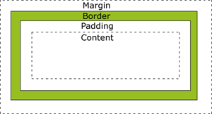
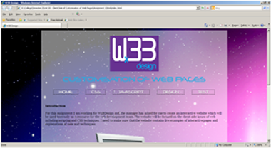
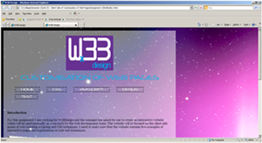
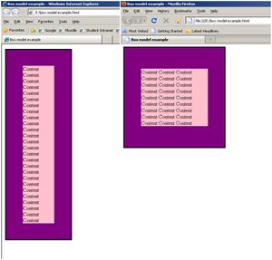

Customisation of Web Pages
Box Models
In CSS the Box Models are what contains the elements of HTML. The Box Model contains the margin, border, padding and the content. The Box Model allows us to put a border around certain elements and space them out.
The box model components all do different things. The margin is the area outside the border and it doesn't have a background, it's transparent. The border then goes around the padding and the content and its affected by the background colour of the border. The padding clears the area thats around the content and then lastly the content is the content within the box where text and images can go.
You can also have width and height in the box model but you need to know how the box model works. This is because when you put the width and height properties to an element in CSS, you just add the width and height to the content area. So, if you wanted to calculate the full size of an element you would need to apply the margin, border and padding elements.
There are different properties to each of the elements like top, bottom, left and right. There's also many styles to the border element, for example, dotted, dashed, inline and many others. As you can see I have used a dotted border for my floated menu.
Below is an example of how a box model looks:
DOCTYPE
The DOCTYPE statement is used to make sure that browsers render your content accurately.
An HTML file with a DOCTYPE statement looks like this:
<!DOCTYPE HTML PUBLIC "-//W3C//DTD HTML 4.01 Transitional//EN"
"http://www.w3.org/TR/html4/loose.dtd">
Below is an image of my website with a DOCTYPE statement in the Internet Explorer browser.
Below is an image of my website without a DOCTYPE statement in the Internet Explorer browser.
As you can see without a DOCTYPE statement all of your content goes to the left hand side of the page. Whereas, with the DOCTYPE statement it aligns all the content in the center of the page.
Also, if the DOCTYPE statement is not used then the browser will open up in quirks mode. Quirks mode doesn't render the web page correctly and it displays the web page in the browser incorrectly. Below is an image of box model in Internet Explorer(on the left) and Mozilla Firefox(on the right):-
As you can see above I have screened shot the same box model in two different browsers. It looks as if I have given different dimensions but I have actually given them both the same dimensions. Below is the code that I have used for the box model:
<style type="text/css">
#boxmodel {
background: purple;
width: 200px;
border: 3px solid black;
padding: 50px;
}
#boxmodel p {
background: pink;
}
</style>